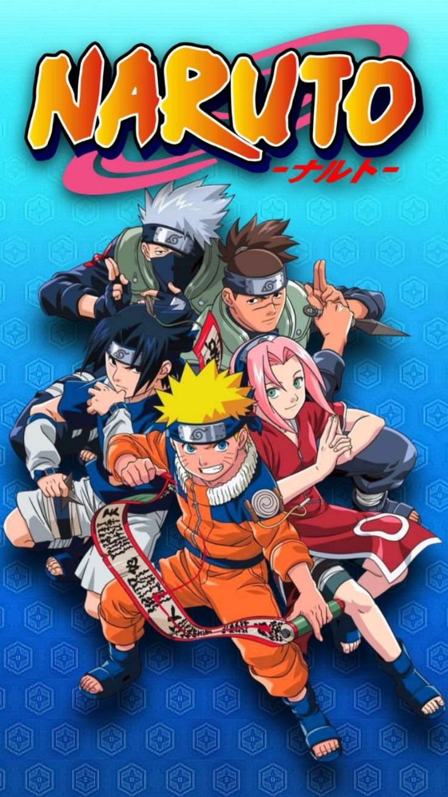

Naruto Classico

SINOPSE
- Naruto é um anime e mangá criado por Masashi Kishimoto que acompanha a jornada de Naruto Uzumaki, um garoto órfão e cheio de energia que sonha em se tornar o Hokage, o ninja mais forte e respeitado da Vila da Folha (Konohagakure).